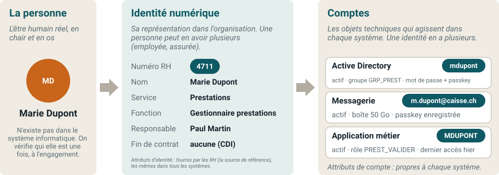

01
Vocabulaire, les quatre questions, la carte du domaine
Fil rouge : avant de suivre Marie, se mettre d’accord sur les mots.
Vocabulaire

Une personne ≠ une identité ≠ un compte. L’identifiant (en bleu) est l’attribut qui sert de clé : numéro RH pour l’identité, login pour le compte. C’est une étiquette, pas un objet : il ne porte ni secret ni droit.
Les quatre questions
? Qui es-tu ? Identification
Je déclare une identité. Étape non sécurisée : n’importe qui peut prétendre s’appeler Marie.
! Le prouves-tu ? Authentification
Je fournis une preuve : mot de passe, clé de sécurité, certificat.
→ As-tu le droit ? Autorisation
Le système décide. Étape séparée : être authentifié ne donne aucun droit en soi.
≡ Qui a fait quoi ? Traçabilité
On enregistre ce qui se passe. Sans identité fiable au départ, les journaux ne prouvent rien.
L’erreur classique : croire que l’autorisation découle automatiquement de l’authentification. Ce sont deux décisions séparées, souvent prises par deux systèmes différents.
Cartographie
A Gestion des accès (Access Management)
Authentification, SSO, fédération, MFA. Tout ce qui se passe au moment de la connexion (chapitres 5 à 7).
B Gouvernance des identités (IGA)
Cycle de vie, création automatique des comptes, rôles, revues des accès, séparation des tâches (chapitres 3, 4 et 8).
C Comptes à privilèges (PAM)
Comptes administrateurs : changement automatique des mots de passe, droits accordés juste le temps nécessaire, enregistrement des sessions (chapitre 8).
D Identités clients (CIAM)
Clients et citoyens : inscription en libre-service, consentement, grands volumes, confort d’utilisation (chapitre 9).
E Identités non humaines
Services, machines, conteneurs, programmes automatiques. Aujourd’hui plus nombreux que les humains (chapitre 9).
À retenir
Aucun éditeur ne couvre bien les cinq domaines : une architecture IAM est presque toujours un assemblage de plusieurs produits.